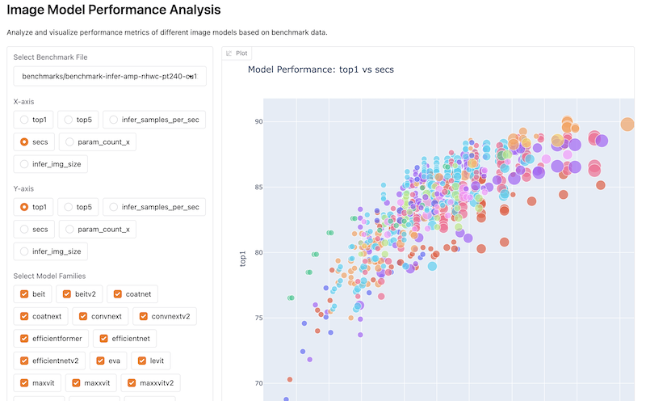

Interlude: Which image models are best? UPDATED
2025-05-19
- Learn how to choose the best image classification models using updated data and tools.
- See how the popular “Which image models are best?” notebook was revived with new sources and recent models.
- Get links to interactive notebooks and a Gradio app for hands-on model comparison.
In my attempts to create an image classifier, following the Fast.ai method as learned in lesson 2, I wanted to try other base-models. A way to help pick the most suitable model was presented in lesson 3.
Jeremy Howard created this amazing notebook that helps selecting a model for your use case: Which image models are best?. Unfortunately the notebook is two years old and is no longer working.
The notebook gets its data from the timm computer vision library. It is currently part of Huggingface here.
What is timm?
As far as I understand it, timm is a collection of PyTorch compatible models focussed on computer vision, so all about images: classification, segmentation and more. Apart from a lot of models (old and new, small and large) it has other helpful stuff (helpful for people who know what this all about, not me…, yet! :)).
From the Huggingface docs:
timmis a library containing SOTA computer vision models, layers, utilities, optimizers, schedulers, data-loaders, augmentations, and training/evaluation scripts.It comes packaged with >700 pretrained models, and is designed to be flexible and easy to use.
It started as Ross Wightman’s solo project, but now it’s part of the Hugging Face ecosystem.
For me timm is relevant, because it allows me to try different models that can improve the is there a lamp classifier, and in the future, for more advanced stuff we will do.
Great visualization (outdated)
Jeremy Howard used the timm data to make is easier to select models to try out. He created a notebook that includes graphs like this:
As said, unfortunately it no longer works if you copy it to your own account (the data sources have moved to Huggingface), and worst: it doesn’t contain information from more recent models.
The timm leaderboard is meant to replace it, but it is not as clear IMO. I want the same happy colorful interactive bubbles!
Should be easy to fix, so let’s get to it!
Yeah, great question! We could also dump all data into an LLM and ask it to create some useful visualizations. It has the advantage that you can chat about the data as well to make the right choice.
Sometimes, however, it feels just easier to play around in a notebook IMO. Also, in this specific case, it is not so easy to get the same results: you are basically describing to the LLM in text what we (Jeremy) did here with code.
Visualization repaired
As said, it was mostly a matter of pointing to the new data sources and to include a couple of newer models that are SOTA (I asked ChatGPT DeepSearch which ones are). I also found the original data sources and recreated the original charts next to the new ones.
The notebook I used for my experiments, with both the new and the old data sources, is here: Which image models are best? (updated).
I also created a copy on Kaggle here. Kaggle has some problems rendering the plotly charts (which I fixed in part): they don’t show up unless in edit mode…
Finally I created a version with less text, and more flexibility:
- you can select the benchmark file
- limit the included model families
- change what charts will display on x- and y-axis
- when new benchmarks are published, they wil be included
It can be found here: Which image models are best? (improved).
Deploying it on Huggingface with Gradio
I asked Claude to port the notebook to a Gradio app, and after some tweaks it seems to work just fine:
Image Model Performance Analysis

Pretty cool, no?
What’s next
This interlude got a bit out of hand. Time to go back to our image classifier and pick a better model. Read on…